Advanced traffic forwarding, deep ZCC authentication and forwarding troubleshooting, App Connector design under HA constraints, and Zero Trust Branch deployment — the largest section in the course because every later service depends on these pipes being right.
Connectivity is the plumbing under the platform.
Every other Zscaler decision — policy, DLP, posture, ZDX — assumes traffic actually reaches the cloud. This section is where that assumption gets tested in real customer environments and broken designs get caught early.
💭THINK FIRST · OVERVIEW
Connectivity is the longest section of EDU-302 (22 lessons). The reason isn't depth in one topic — it's that connectivity decisions ripple through every other service. A bad ZCC auth config breaks ZIA traffic and ZPA access simultaneously. Before reading on, think about why connectivity has more "diagnostic" lessons than any other section.
The course is structured around five blocks: traffic forwarding · ZCC auth troubleshooting · ZCC forwarding troubleshooting · App Connector deployment · Zero Trust Branch. Why are two of those five about troubleshooting rather than design?
Every previous section in EDU-302 builds toward "configuring correctly". This one spends nearly half its time on "what to do when it's wrong". What's the consultant's role specifically in those troubleshooting moments — and what's the customer's?
If you could only retain one thing from this entire section after a year, what should it be — and why?
Q1 — MODEL ANSWER
Because connectivity is where the customer's real environment first collides with Zscaler's assumptions — firewalls, NAT, MTU, MFA prompts, captive portals, antivirus, certificate stores. The configuration looks right on paper but pilot users hit edge cases on Day 1. Two troubleshooting blocks reflect the reality: you'll spend more time un-breaking connectivity than designing it.
Q2 — MODEL ANSWER
The consultant brings the diagnostic framework — what to check first, what the log paths are, which symptoms map to which root causes. The customer brings the environment knowledge — what changed last week, which AV vendor is deployed, which SAML group memberships shifted. Without the framework the customer flounders; without the environment knowledge the consultant is blind. Troubleshooting is a partnership, not a handover.
Q3 — MODEL ANSWER
The location of the Client Connector logs (Windows: C:\ProgramData\Zscaler, macOS: /Library/Application Support/com.zscaler.Zscaler, Linux: /var/log/zscaler/.Zscaler/Logs). Almost every real-world ZCC troubleshooting session starts by pulling these. Knowing exactly where to look saves the first 30 minutes of every diagnostic call.
COURSE OVERVIEW
Welcome to Connectivity Services
This is Course 4 of the Zscaler for Users — Delivery Consultant (EDU-302) Learning Path. The course covers advanced connectivity strategies and best practices — large-scale traffic forwarding, complex troubleshooting for Zscaler Client Connector, in-depth App Connector configurations, and Zero Trust Branch deployment.
Five main course sections (5 learning outcomes): 1. Traffic Forwarding Best Practices — Zscaler's recommended approach for forwarding user, IoT, server, and guest traffic to the Zero Trust Exchange.
2. Troubleshoot ZCC Authentication Issues — learn to isolate, diagnose, and resolve common Client Connector authentication errors.
3. Troubleshoot ZCC Forwarding Issues — understand the intricacies of traffic routing and how to identify forwarding blockages.
4. App Connector configuration — provisioning keys, group configurations, and best practices for redundancy and diversity.
5. Deploy Zero Trust Branch Devices — verifying the prerequisites, deployment steps, and operational best practices for secure branch connectivity.
Course objectives
Implement advanced traffic forwarding strategies tailored to specific business and technical requirements
Resolve Zscaler Client Connector authentication issues, interpreting log files and enrollment processes in complex deployment scenarios
Troubleshoot traffic forwarding blockages, using advanced diagnostic tools to pinpoint and address endpoint or network-level conflicts
Deploy App Connectors with an emphasis on redundancy, high availability, and secure application access across data centers, clouds, and hybrid environments
Manage Zero Trust Branch Devices, from verifying prerequisites and configuring virtual appliances to overseeing ongoing device operations and maintenance
🧠
MENTAL NOTE
22 lessons, 5 outcome areas. Verbs to recognise: Implement / Resolve / Troubleshoot / Deploy / Manage. Two of five outcomes are diagnostic (Resolve, Troubleshoot) — this is the most diagnostic-heavy section in EDU-302.
Analogy
Connectivity Services is the plumbing inspection module of a building-construction course. You can design beautiful rooms (policies, identity, dashboards) — but if the pipes leak, freeze, or aren't installed to code, none of it matters. Half the inspector's training is "how to find a leak"; only half is "how to lay pipe correctly". That ratio is intentional.
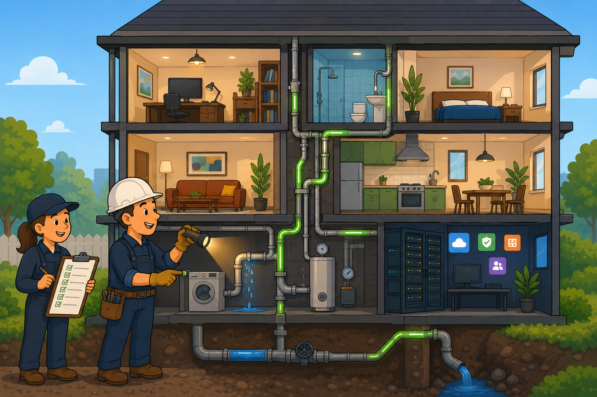
📷 A1.png — add this image to the folder
Flat minimalist cartoon illustration of a building inspector with a clipboard checking plumbing pipes throughout a multi-storey cutaway house as an analogy for connectivity inspection in Zscaler deployments. Wide composition with visible cross-section of a friendly cartoon house. Different storeys show colourful rooms — office, kitchen, server-room labelled with tiny app icons — but the focus is the pipes running through walls between them. A cheerful inspector in a hard hat and overalls holds a glowing flashlight on a leaking joint while their assistant ticks off a long checklist. Other pipes glow green where they're correctly installed. Mood of careful, focused diagnosis. Clean geometric shapes, flat illustration style, bold outlines, simple cartoon characters, no text labels, no UI elements, educational infographic feel, modern tech-analogy aesthetic.
ASK A QUESTION
ADD A NOTE
QUICK RECAP
Recap from EDU-200 + EDU-202
Three building blocks of connectivity that EDU-302 assumes you've already learned:
From EDU-200 Administrator
Connectivity Services Basics — the fundamentals of tunneling methods, PAC files, and the essential components of Zscaler's connectivity services
Zscaler Client Connector — the bridge between user devices and the Zero Trust Exchange, covering enrollment processes, key features, and best practices for deployment and configuration
App Connectors — design, deployment, and the critical role they play in connecting users to applications
From EDU-202 Engineer
Advanced connectivity functionalities — applying Zero Trust principles to create secure and seamless connections across users, devices, and applications
Provisioning details at the architecture level — connector groups, server groups, segment groups, application segments and their relationships
EDU-200 = connectivity primitives. EDU-202 = architectural composition (groups, integrations). EDU-302 = recommendation + diagnostics under real customer pressure. The deeper you go, the less time you spend on "what is it" and the more on "what does this customer need + why is theirs broken".
ASK A QUESTION
ADD A NOTE
💭THINK FIRST · TRAFFIC FORWARDING
Three traffic-forwarding methods (GRE, IPSec, PAC) each have their own bandwidth ceiling, encryption posture, and infrastructure requirement. Before reading on, think about which constraint usually decides the choice in a real customer engagement.
GRE tunnels go up to 1 Gb per tunnel. IPSec tops out at 500 Mb (250 Mb encrypted). If a customer needs 3 Gb of forwarding bandwidth, what's actually being decided — and what extra infrastructure work does that imply on the customer side?
The course explicitly warns about ZCC + GRE coexistence: "ensure Client Connector traffic bypasses the GRE or IPSec tunnels". Why is double-tunneling bad enough to warrant a callout — what specifically goes wrong if you don't bypass?
A customer wants to switch from MPLS-backhauled-to-HQ to local internet breakout via SD-WAN. How does that change shift the traffic forwarding recommendation?
Q1 — MODEL ANSWER
You need to load-balance multiple tunnels — 3 GRE tunnels of 1 Gb each, or 6 IPSec tunnels of 500 Mb. The decision is encryption posture (do you need traffic between branch and Zscaler edge encrypted?) and operational complexity. Load-balancing multiple tunnels on the customer's edge router (typically by hashing on source IP or port) is a customer-side configuration burden — the consultant must ensure their network team is aware.
Q2 — MODEL ANSWER
When ZCC traffic enters a GRE/IPSec tunnel, you double-encapsulate — DTLS inside GRE inside IP. Performance degrades, MTU fragmentation issues appear, and troubleshooting becomes nightmarish because packets look "right" at one layer and "wrong" at another. The fix is to route ZCC traffic directly to the internet (it already authenticates and tunnels to Zscaler on its own), letting only non-ZCC traffic ride the GRE/IPSec tunnels.
Q3 — MODEL ANSWER
It shifts the design from "single HQ tunnel + backhaul" to "per-site tunnels at every remote office". You now need to think about per-site bandwidth, per-site tunnel provisioning, and per-site "known location" registration in the Zscaler portal. SD-WAN co-existence also means more devices to configure, and per-site failover. The consultant moves from designing one big pipe to many smaller pipes — a different conversation entirely.
TRAFFIC FORWARDING
Best Practices and Methods
Traffic Forwarding defines how traffic gets from the end-user machine to Zscaler. Because ZIA is a cloud-based solution, customers must forward traffic from their end-user machine to Zscaler for security policies to apply. Unless traffic is forwarded to the Zscaler platform, it isn't subject to Zscaler's security.
Important pre-design considerations
NAT Address Requirements
If you have more than 1,000 Client Connectors, you may need additional NAT addresses.
Client Connector + GRE Coexistence
When a location uses both ZCC and GRE tunnels, ensure ZCC traffic bypasses the GRE/IPSec tunnels. Critical when ZCC uses DTLS — tunnelling secure traffic within another tunnel causes performance and complexity issues.
Three traffic-forwarding methods
GRE Tunnels
Benefits
Multiple local network segments over a single tunnel
Up to 1 Gb per tunnel
Can be load balanced (from customer's location)
Self-provisionable in management console (enable with Zscaler support)
Requirements
Static public IP per tunnel
Non-NATed IPs preferred
Must be associated with a "known location"
Limitations
Not encrypted
IPSec Tunnels
Benefits
Up to 500 Mb per tunnel
Egress IPs from customer's location can be dynamic
Provisioned in ZIA online management console
Requirements
Public IP / FQDN per tunnel
Multiple tunnels need load balancing on customer end
Encryption cuts bandwidth from 500 Mb to 250 Mb per tunnel
No multi-segment over single tunnel unless built with a transit network linked to the Zscaler DC
PAC Files
Benefits
Fastest way to check ZIA access (not comprehensive)
No client software needed
Can bypass specific web traffic from being forwarded
Testable on any browser
Requirements
Limited to HTTP-based proxy-aware apps (browsers)
Best practice: host on Zscaler cloud for precise geo-IP routing
Proxy Port subscription for SSL inspection
Limitations
Can become complex
Only works with browser-based traffic
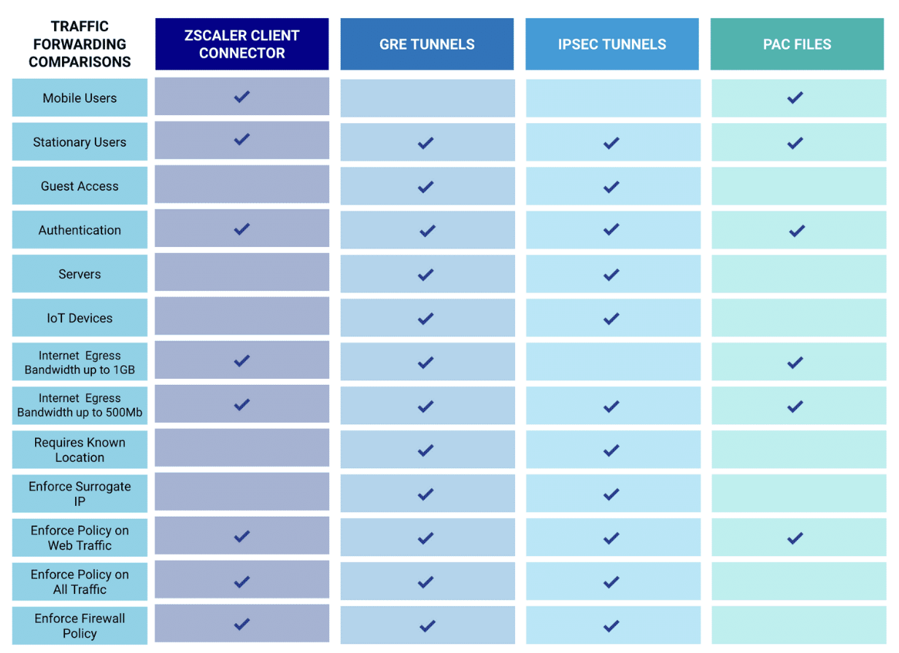
Course reference chart comparing all four traffic-forwarding methods (Zscaler Client Connector, GRE Tunnels, IPSec Tunnels, PAC Files) across traffic types (mobile users, stationary users, guest access, servers, IoT) and feature capabilities — use this to quickly determine which method applies to a given scenario.
Customer scenarios — what to recommend
The Design Questionnaire surfaces several scenarios that drive the forwarding recommendation. Below are the canonical patterns from Safemarch Corp:
REST endpoints and REST-aware clients. Backend-heavy with bursty payroll generation. Need to secure machine-to-machine traffic plus variable employee traffic.
Recommend: ZCC for employees (removes their traffic from bandwidth math), multiple GRE tunnels for server-to-server. Work with network team to size GRE bandwidth based on actual server-side usage.
SCENARIO 2 · HQ-CENTRALISED ENTERPRISE
Employees at many locations, SaaS-heavy, all user traffic backhauled to HQ, numerous unauthenticated sources, 1 Gb business class internet
All unauthenticated traffic egresses HQ. Static IP at HQ. SaaS use is widespread.
Recommend: GRE/IPSec tunnels at HQ for unauthenticated traffic, ZCC for authenticated employees to remove them from the HQ backhaul. Plan known-location registration.
SCENARIO 3 · HOSTING PROVIDER + SD-WAN BREAKOUT
Similar to Scenario 2 but adopting SD-WAN at remote offices for local internet breakout
Customer has fewer than 1,000 employees but redundant 20 Gb internet links; employee traffic estimated <1 Gb. Now wants local breakout via SD-WAN per remote office.
Recommend: Per-site GRE/IPSec tunnels from each SD-WAN edge to Zscaler. ZCC for employees. Each branch becomes a known-location entry. Coordinate with the SD-WAN vendor on tunnel provisioning.
!
KNOWLEDGE CHECK
A customer says "we want to forward user traffic using GRE tunnels from HQ and nothing else for now". Is the customer right? No — that's typically the wrong design for user traffic. Users should be on ZCC. GRE is more appropriate for server-to-server or unauthenticated office egress. The DC's job is to redirect that conversation toward the right pattern.
🧠
MENTAL NOTE
GRE = 1 Gb / unencrypted / multi-segment OK. IPSec = 500 Mb (250 if encrypted) / static or dynamic egress / single segment. PAC = browser-only / fastest to validate. Users → ZCC; servers/IoT/unauthenticated office traffic → GRE or IPSec. Never double-tunnel ZCC inside GRE/IPSec.
Analogy
Traffic forwarding is like choosing the right delivery service for different parcels. ZCC = personal courier who escorts each user individually (encrypted, authenticated, follows them everywhere). GRE = a high-capacity freight truck running between two depots (cheap, big, but unlocked back). IPSec = the armoured truck (smaller, locked, slower). PAC files = the local taxi driver who only handles people going to the high street (browser-only). Putting a personal courier inside a freight truck inside an armoured truck is just three layers of unnecessary handling — and that's exactly what double-tunneling ZCC does.
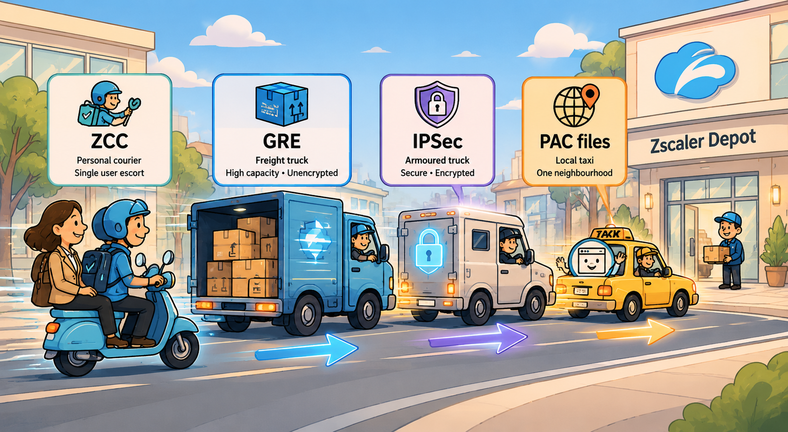
📷 A2.png — add this image to the folder
Flat minimalist cartoon illustration of four different delivery services as an analogy for Zscaler traffic forwarding methods. Wide composition along a single street. Foreground left to right: (1) a cheerful personal courier on a scooter with a single backpack escorting a customer in business attire (ZCC) — small, agile, individual. (2) A large blue freight truck with its rear cargo door open, packages clearly visible inside (GRE) — high capacity, unencrypted. (3) A small armoured truck with a glowing padlock decal and a thicker frame (IPSec) — smaller, slower, secure. (4) A yellow taxi with a smiling browser-icon passenger (PAC files) — handles only one neighbourhood. All four are heading right toward a friendly cartoon depot labelled with a soft Zscaler-style cloud icon on the far right. Mood of efficient logistical choice. Clean geometric shapes, flat illustration style, bold outlines, simple cartoon characters, no text labels, no UI elements, educational infographic feel, modern tech-analogy aesthetic.
ASK A QUESTION
ADD A NOTE
💭THINK FIRST · ZCC AUTHENTICATION TROUBLESHOOTING
Authentication is the first step in setting up Client Connector tunnels — which means it's also the first thing to fail. Before reading on, think about why the course leads troubleshooting with auth specifically, rather than starting with traffic forwarding.
If a user reports "I can't use the internet through Zscaler", how do you decide whether the root cause is auth or forwarding — and what's the first piece of evidence you'd ask for?
The course gives you three OS-specific log paths (Windows, macOS, Linux). Why is "where are the logs" the single most repeatable consultant skill from this entire section?
The Safemarch case study features a user who's been working fine "until now" — they hit re-authentication, hit Retry, and the error persists. What does "worked until now" tell you about the likely root cause class?
Q1 — MODEL ANSWER
Open the ZCC client. Check the Service Status row first — if it says "Authentication Error" or similar, it's auth. If it says "Connected" but the user still can't reach a site, it's forwarding (or policy). The auth/forwarding split is the very first triage decision; the rest of the diagnostic flow forks from there.
Q2 — MODEL ANSWER
Because every other diagnostic step depends on having the logs. You can't read a stack trace you haven't pulled. Once you know the three paths cold, you can talk a user through pulling logs over the phone in 30 seconds — which is the difference between a 10-minute call and a two-hour one. It's the highest-leverage piece of trivia in the course.
Q3 — MODEL ANSWER
It means the root cause is likely environmental or temporal — something changed on the user's machine, in the IdP, or in the local network. Common culprits: AV/endpoint protection update broke trust, certificate expired, IdP group membership changed, captive portal in the way (coffee shop), MFA enrolment device changed. The "worked until now" framing rules out structural config issues — you're looking for what changed.
The Zscaler Client Connector is the key that unlocks access to private applications through ZPA — it's the bridge that connects the client to the ZPA Cloud. It also forwards user-bound internet traffic to ZIA. When ZCC fails, both private and internet access fail together.
Fundamentals to remember
SAML is Zscaler's recommended authentication method and is fundamental to understand for effectively troubleshooting authentication issues
Authentication is the first step in setting up Client Connector tunnels — so the Z-Tunnel log files are where to look for troubleshooting details
Tips & tricks for faster diagnosis
★
QUICK REFERENCE — ZCC LOG LOCATIONS
Keep these three log paths memorised — they save the first 30 minutes of every diagnostic call:
· Windows:C:\ProgramData\Zscaler · macOS:/Library/Application Support/com.zscaler.Zscaler · Linux:/var/log/zscaler/.Zscaler/Logs · Also:Config.zscaler.com for up-to-date Client Connector hosts, IPs, and network connectivity details
The Safemarch authentication-error case study
A user in the Safemarch deployment had a positive experience with Zscaler — until now. They're hitting authentication errors when prompted to reauthenticate in Zscaler Client Connector on their laptop. They've hit "Retry" several times and the error persists.
The ZCC client shows: Service Status = Endpoint FW/AV Error · Off-Trusted Network. The rest of the connectivity rows (Authentication Status, Broker, Time Connected, Protocol) are blank.
i
SYSTEMATIC TROUBLESHOOTING STEPS
1. Confirm the symptom in the ZCC UI. Service Status + Authentication Status tell you whether it's an auth path issue, a network-trust issue, or a forwarding issue.
2. Pull the Z-Tunnel log file from the OS-specific path above. Search for authenticate in the most recent log.
3. Identify the failure type — endpoint security blocking the tunnel, certificate trust failure, captive portal, IdP MFA timeout, or token expiry.
4. Confirm against config.zscaler.com — Client Connector should be able to reach the documented hosts/IPs. Local firewall or AV rules often block them after an update.
5. Resolve at the right layer — sometimes it's a ZCC client setting, sometimes it's a customer-side AV exclusion, sometimes it's an IdP policy that the customer's identity team needs to update.
🧠
MENTAL NOTE
Auth is step 1 of ZCC, so it's bug 1 of ZCC. Log paths to memorise: Windows ProgramData\Zscaler · macOS /Library/Application Support/com.zscaler.Zscaler · Linux /var/log/zscaler/.Zscaler/Logs. Config.zscaler.com = canonical source of host/IP/connectivity info.
Analogy
ZCC auth troubleshooting is medical triage. The ZCC UI is the patient's face — a quick visual tells you whether they're conscious, breathing, in pain. The log files are the bloodwork — you don't make a diagnosis without them. Config.zscaler.com is the medical reference book — what's "normal" for this patient. And like medicine, "worked until now" almost always means something else changed — recent medication, recent travel, recent injury. Find what changed and you find the diagnosis.
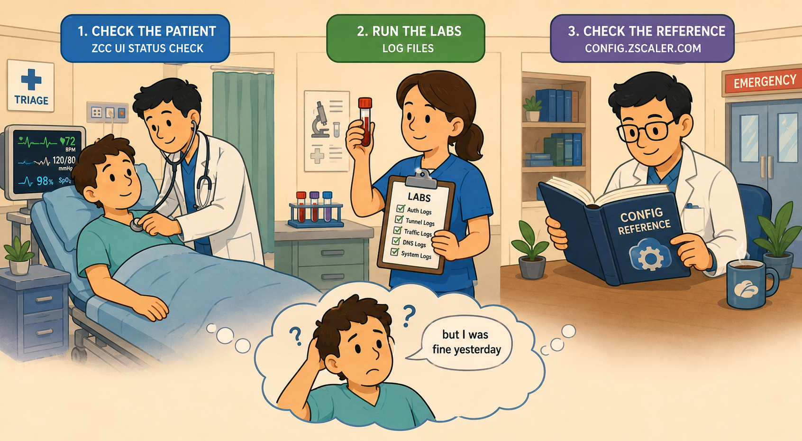
📷 A3.png — add this image to the folder
Flat minimalist cartoon illustration of medical triage as an analogy for ZCC authentication troubleshooting. Wide composition in a friendly emergency-room setting. Left scene: a cheerful doctor at the bedside checking the patient's face and vital signs on a small monitor (representing the ZCC UI status check). Middle scene: a nurse holding up a small vial of blood next to a clipboard reading "labs" (representing the log files). Right scene: the doctor flipping through a large medical reference book labelled with a subtle config-style icon on the cover (representing config.zscaler.com). Below all three scenes a faint thought-bubble shows the patient looking puzzled and saying through speech lines "but I was fine yesterday" (representing the "worked until now" framing). Soft warm medical lighting, mood of calm methodical diagnosis. Clean geometric shapes, flat illustration style, bold outlines, simple cartoon characters, no text labels, no UI elements, educational infographic feel, modern tech-analogy aesthetic.
ASK A QUESTION
ADD A NOTE
💭THINK FIRST · ZCC FORWARDING TROUBLESHOOTING
Once authentication is solved, forwarding becomes the next failure mode. ZCC has its own UI hints (connectivity status, tunnel version, throughput), plus the same OS log paths. The diagnostic mode shifts from "is the user authenticated?" to "is the user's traffic actually reaching the right place?".
If ZCC reports "Connected" but a user can't reach Salesforce, what are the three most likely root causes, in order?
The ZCC UI exposes IP addresses and tunnel versions. Why are those specifically the diagnostic data the consultant should be drawing from — what do they tell you that the log files don't immediately?
How would a consultant differentiate between "Zscaler-side outage" and "customer-side issue" when investigating a forwarding problem?
Q1 — MODEL ANSWER
(1) Policy — URL filtering or App Control is blocking the Salesforce hostname. (2) SSL inspection breaking the cert chain — Salesforce uses cert pinning in some flows. (3) Local network interference — captive portal, host file override, MTU fragmentation on a flaky Wi-Fi. Always start with policy logs in the Zscaler portal; they're the quickest to rule in or out.
Q2 — MODEL ANSWER
The IP addresses tell you which Zscaler edge the user is hitting — and whether they're hitting the right one (a US user pointing at an EU edge often means broken geo-IP). Tunnel version tells you whether ZCC is using DTLS, TLS, or fallback mode — version mismatches map to specific known issues. They're "first-impression" data that frames the rest of the investigation; the logs come second, to confirm.
Q3 — MODEL ANSWER
Check status.zscaler.com (or the equivalent status page for the customer's cloud) — if Zscaler reports degradation in the user's region, that's the answer. Otherwise: have a different user on a different network try the same app. If they succeed, it's environment-specific to the original user; if they fail, it's a wider issue. The cross-user comparison is the cheapest test you have.
Forwarding traffic from the user's device to the Zscaler Cloud is the fundamental job of ZCC. The Client Connector UI shows connectivity status and authentication status — giving you obvious things to check in terms of IP addresses and tunnel versions in play. Troubleshooting tools within ZCC also enable examination and capture of useful traffic details for deeper analysis.
Where to look in the ZCC UI
Connectivity panel — Username, Service Status, Authentication Status, Broker, Time Connected, Protocol
Statistics panel — Total Packets Sent, Total Packets Received (zero packets sent = forwarding broken)
Settings panel — Service status detail, Service Status, ZApp Logs entry point, Captive Portal indicator
About panel — App version, ZCC tunnel/configuration time
Common forwarding failure modes
Captive portal — coffee shop or hotel Wi-Fi requires browser-based sign-in before traffic flows; ZCC has a captive-portal indicator
MTU fragmentation — DTLS tunnels are sensitive to MTU; flaky Wi-Fi often manifests here
Endpoint AV/EDR — antivirus or EDR can block the DTLS tunnel after an update
Wrong edge — user pointing at the wrong regional edge (broken geo-IP, VPN to another country, residential DNS)
Policy block — URL filtering, App Control, or Cloud App Control silently dropping traffic
When forwarding fails, run this triage to localise the fault:
· Same user, different network — if it works, blame the network.
· Different user, same network, same app — if they succeed, blame the user's environment (AV, profile, certs).
· Same user, same network, different app — if the other app works, blame policy or app-specific behaviour (pinning, MTU, IP allow-listing).
🧠
MENTAL NOTE
ZCC UI gives you Service Status + IPs + tunnel version + protocol — read it first. Logs second. Three-way triage: different network / different user / different app — isolates the fault to network, environment, or policy.
Analogy
Forwarding troubleshooting is like a plumber finding a clogged pipe in a multi-storey building. The plumber doesn't tear out walls — they swap one variable at a time. Try a different tap in the same room (different app, same path). Try the same tap from a different room (same app, different network). Try someone else's identical tap (different user). Each test rules out a branch of the pipe-tree until only one possible blockage remains.
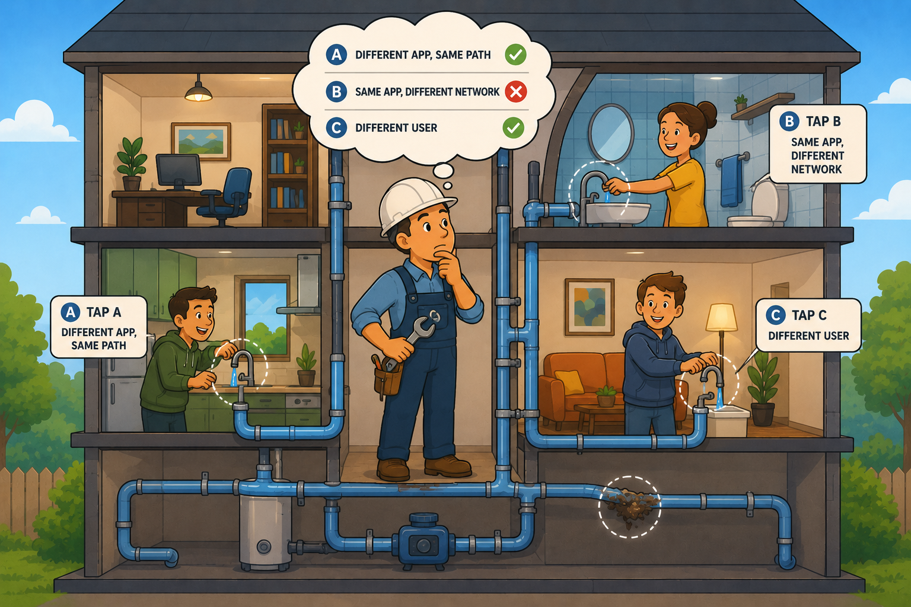
📷 A4.png — add this image to the folder
Flat minimalist cartoon illustration of a plumber finding a clogged pipe via systematic three-way testing as an analogy for forwarding troubleshooting. Wide composition with a cutaway view of a friendly three-storey cartoon house. The plumber in overalls and a hard hat stands in the centre with a wrench, looking thoughtful at three taps highlighted at three different points: tap A in the kitchen (different app, same path), tap B in the upstairs bathroom (same app, different network), tap C labelled with a second cartoon resident also trying their tap (different user). Pipes connect all three through visible internal plumbing painted in soft blue. The plumber's thought bubble shows three small ticks and crosses indicating which tests passed and which failed. Mood of methodical isolation. Clean geometric shapes, flat illustration style, bold outlines, simple cartoon characters, no text labels, no UI elements, educational infographic feel, modern tech-analogy aesthetic.
ASK A QUESTION
ADD A NOTE
💭THINK FIRST · APP CONNECTORS
App Connectors provide the secure authenticated interface between a customer's private applications and the ZPA Cloud. They act as the client machine's proxy when interacting with private applications. The design decisions are about where to place them, how many to deploy, and how to group them — all under high-availability constraints.
The course says App Connectors running in VMs should never be cloned. What specifically breaks if you clone an App Connector VM, and why is that worse than just re-deploying?
Best practice is "minimum of two App Connectors per site, ideally N+1 redundancy". Why N+1 specifically — and what does that imply about peak-load planning?
An App Connector supports up to 500 Mbps throughput. If a customer's site needs 1.5 Gbps to private apps, how many App Connectors do you recommend — and why not exactly three?
Q1 — MODEL ANSWER
Cloning copies the provisioning key + identity fingerprint, but the new clone's hardware fingerprint differs. The provisioning key will no longer match — ZPA Cloud rejects the clone, and worse, can confuse the original's identity tracking. Re-deploying fresh with a new provisioning key is always cleaner; cloning saves five minutes and costs a day of confusion.
Q2 — MODEL ANSWER
N+1 means you can lose one App Connector at peak load and still serve users. Capacity-planning for "exactly N" means any failure is a customer-visible outage; planning for "N+1" gives you graceful degradation. Implication: you must size for the second-highest usage moment, not the average — otherwise N+1 doesn't actually cover your real peak.
Q3 — MODEL ANSWER
Four. Three connectors at 500 Mbps each totals 1.5 Gbps — exactly your peak — so any failure puts you under capacity. Four gives you N+1: three running connectors covering 1.5 Gbps plus one redundant. Also leaves room for the inevitable usage growth between deployment and next review cycle.
APP CONNECTORS · CONFIGURATION & DEPLOYMENT
Design + best practices
App Connectors provide the secure authenticated interface between a customer's private applications and the ZPA Cloud. The App Connector acts as the client machine's proxy when interacting with private applications. Every App Connector belongs to a specific App Connector Group, and every App Connector Group should always be associated with a provisioning key and one Server Group to serve any application.
Recommended approach
Deploy in groups for high availability and horizontal scaling.
App Connectors should be grouped within Data Centers (DCs) and not span different DCs to ensure load sharing will be consistent
Create a new provisioning key for each new Connector Group
Best-practice cards
App Connector Placement
Place the App Connector as close to the destination applications as possible for the fastest communication path and best user experience. Minimises firewall changes.
Two App Connectors Per Site
Configure a minimum of two App Connectors per site, ideally N+1 redundancy for the estimated bandwidth. Supports rolling updates and host failures. 500 Mbps per Connector.
Unrestricted Access
Connectors should have unrestricted access to applications — no protocol or port limitations or restrictions, including ICMP access.
Internal DNS Server
Configure the App Connector to contact an internal DNS server capable of resolving hosts for all supported applications, and for internet hosts as fallback. FQDN resolution failure = user can't reach the app.
Regularly Update
Regularly manually update the App Connector host OS and third-party software packages.
Never Clone VMs
App Connectors running in VM environments should never be cloned — the provisioning key will no longer match the virtual hardware fingerprint.
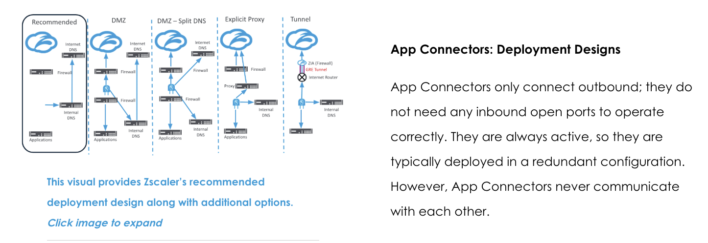
Zscaler's recommended App Connector deployment design alongside four alternative options (DMZ, DMZ with Split DNS, Explicit Proxy, Tunnel) — the recommended design keeps App Connectors closest to applications with outbound-only connections, while the alternatives accommodate different network segmentation requirements.
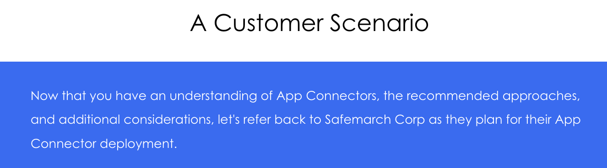
Live ZPA portal view showing the configuration relationship chain from Segment Groups through Application Segments and Server Groups to App Connector Groups and individual App Connectors — each layer maps to the next, and one Server Group can link to multiple App Connector Groups.
Safemarch customer scenario
i
SCENARIO SOLUTION
Safemarch needs App Connectors at two data-centre locations. The minimal correct solution:
· At least 2 App Connectors at both locations · 2 Connector Groups to bind ZPA Connectors for the separate sites
This satisfies N+1 redundancy per site and prevents cross-site failover (which would defeat the placement-close-to-apps principle).
Reference deployment guides
Zscaler provides additional deployment guides for various supported platforms. Use these during the Configure phase:
App Connectors: 500 Mbps each · minimum 2/site · N+1 redundancy · close to apps · unrestricted access · internal DNS · regular updates · never clone VMs · group within a single DC. Every Connector Group needs its own provisioning key + Server Group association.
Analogy
App Connectors are bouncers stationed at private function rooms inside a venue. Each room (application) has its bouncer (Connector) standing at the door. You always station at least two bouncers per room so one can take a break without leaving the door unattended. They wait until a verified guest approaches (outbound-only). They never leave their assigned room (close to the app). And cloning a bouncer's badge doesn't make a real second bouncer — it just confuses the security manager.
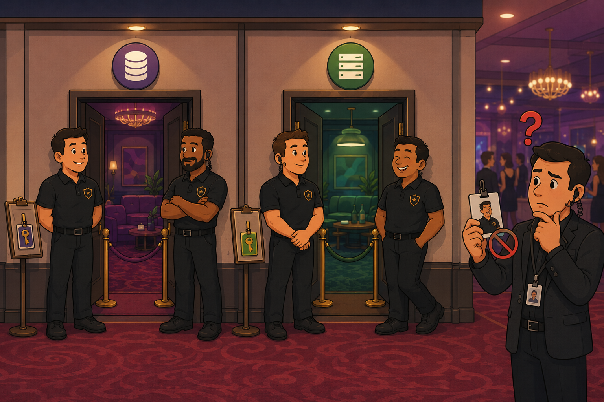
📷 A5.png — add this image to the folder
Flat minimalist cartoon illustration of bouncers stationed at multiple private function rooms inside a venue as an analogy for App Connector deployment best practices. Wide composition cutaway showing two distinct private rooms in a venue. Each room labelled with a tiny application icon (one with a database, the other with a server) has two cheerful bouncers in matching uniforms standing at its door — one alert, one relaxed (N+1 redundancy). Each pair has a small clipboard with a single provisioning-key badge attached. A confused security manager off to the side holds up a cloned bouncer ID card with a red question mark over it — emphasising "never clone". Soft warm venue lighting, cheerful round-faced characters, plush carpet. Clean geometric shapes, flat illustration style, bold outlines, simple cartoon characters, no text labels, no UI elements, educational infographic feel, modern tech-analogy aesthetic.
ASK A QUESTION
ADD A NOTE
💭THINK FIRST · ZERO TRUST BRANCH
Zero Trust Branch Devices are important hardware/virtual appliances installed within an organisation's data centre or branch. Used to manage the organisation's traffic. Despite being located within the customer's infrastructure, they are overseen and maintained by Zscaler Cloud Operations. Zscaler uses Zero Touch Provisioning (ZTP) to seamlessly integrate them.
Customer infrastructure that's managed by Zscaler — what's the operational model on the customer side, and where are the boundaries of responsibility?
Zero Touch Provisioning means the customer doesn't need to image, configure, or manually onboard the device. What does the customer still have to do?
Before deploying a Zero Trust Branch Device, you need to establish a connection between ZIA, ZPA, and the Branch and Cloud Connector Portal. Why is the order of those integrations significant?
Q1 — MODEL ANSWER
The customer hosts the appliance, provides power and network, and grants Zscaler operational visibility. Zscaler Cloud Ops handles patching, monitoring, version management, and break-fix. The boundary is roughly: customer owns the physical/host layer, Zscaler owns the software/services layer. The DC's job is to set the customer's expectations correctly — many customers initially think they need a dedicated network engineer on the device 24/7.
Q2 — MODEL ANSWER
Provide the physical / virtual environment (rack space, power, hypervisor), provide IP addressing and DNS, open the required firewall paths for the device to reach Zscaler's portal for ZTP enrollment, and provide IDs (ZIA ID, ZPA ID, Branch/Cloud Connector ID) for the verification step. Everything else is genuinely zero-touch.
Q3 — MODEL ANSWER
You need ZIA and ZPA tenants integrated with the Branch/Cloud Connector Portal first, because the Branch device's policies are sourced from those tenants. If you deploy the device before integrating, the device has no policies to enforce and effectively does nothing until the integration completes. Wire the back-end first, then deploy the appliance.
ZERO TRUST BRANCH DEVICES
Enhancing operational efficiency with Zero Trust Branch
Zero Trust Branch Devices are important components installed within an organisation's data centre. They manage the organisation's traffic at the branch / data centre edge. Despite being located within the customer's infrastructure, they are overseen and maintained by Zscaler Cloud Operations. Zscaler uses Zero Touch Provisioning (ZTP) to seamlessly integrate the devices into the organisation's network.
Connection between ZIA, ZPA, and Branch/Cloud Connector Portal
i
PRE-DEPLOYMENT INTEGRATION STEPS
1. Integrate the Branch and Cloud Connector Tenants with the Zscaler Internet Access (ZIA) and Zscaler Private Access (ZPA) tenants.
2. Establish the linkage as a prerequisite — it facilitates retrieval of crucial settings and policies required for deployment.
3. Determine the linkage status by providing a verification token created via the Zscaler Support portal, providing the IDs of the ZIA, ZPA, and Branch and Cloud Connector tenants.
4. Tenant IDs unknown? They can be found within their respective portals. Although not all portals directly display this information, the Administrator Management section in each tenant provides access to the Tenant's ID. The default admin login ID typically contains the Tenant's ID after the "@" symbol.
Operational management post-deployment
Following successful deployment, administrators gain access to a range of management options for Zero Trust Branch Devices — overseen by Zscaler Cloud Operations as part of the ZTP model. Click through the tabs in the original course content to see Health Monitoring, Configuration, Updates, and Lifecycle Management options that admins retain visibility into.
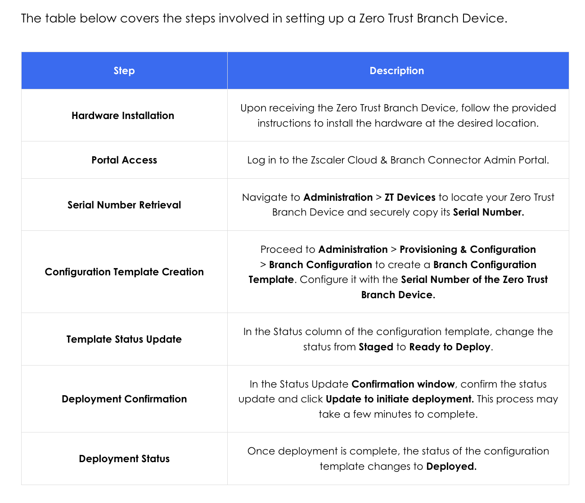
Course reference table showing the six sequential steps to set up a Zero Trust Branch Device — from hardware installation and portal access through serial number retrieval, configuration template creation, template status update, and final deployment confirmation.
🧠
MENTAL NOTE
Zero Trust Branch Devices: customer-hosted, Zscaler-managed, deployed via Zero Touch Provisioning. Pre-deployment requires integrating ZIA + ZPA tenants with the Branch/Cloud Connector Portal — Tenant ID is in the admin login after the "@" symbol. Verification token comes from the Zscaler Support portal.
Analogy
Zero Trust Branch Devices are like leased smart electricity meters. The meter sits in your house (customer infrastructure), but the energy company (Zscaler Cloud Ops) owns it, monitors it, updates its firmware, and replaces it when it dies. You provide a wall socket and an internet connection; they provide everything else. Zero-touch provisioning is the technician plugging it in once and the meter coming online automatically — no setup wizard, no manuals to read.
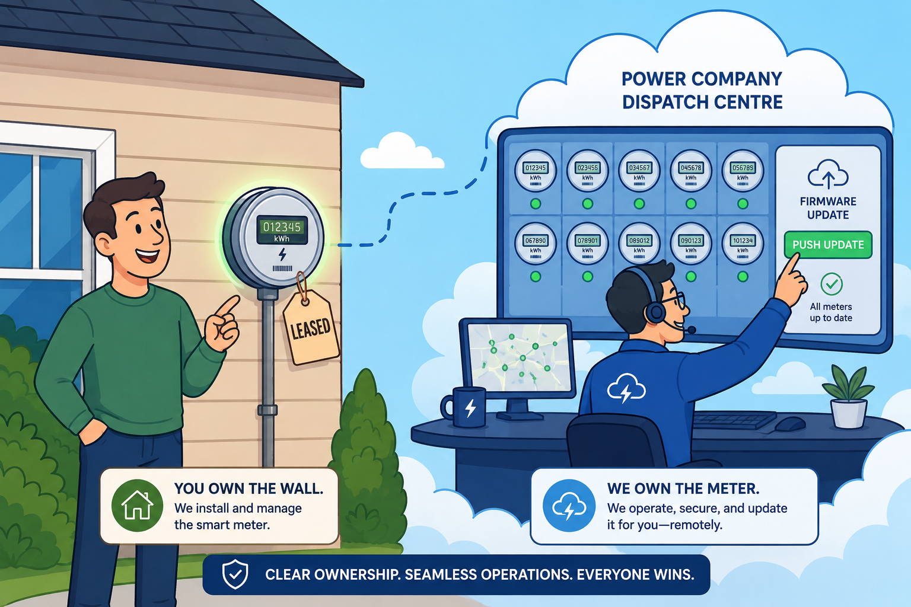
📷 A6.png — add this image to the folder
Flat minimalist cartoon illustration of a leased smart electricity meter as an analogy for Zero Trust Branch Devices. Wide composition. Left scene: a cheerful homeowner stands in front of their house pointing proudly at a glowing smart meter installed on the wall, which has a small "leased" tag dangling off it. Right scene: a power-company technician up in a cloud-themed dispatch centre monitors many such meters from a glowing dashboard, occasionally pushing a firmware-update button. A subtle dashed line connects the meter to the dispatch centre overhead. Mood of effortless operational division: homeowner owns the wall, company owns the meter. Clean geometric shapes, flat illustration style, bold outlines, simple cartoon characters, no text labels, no UI elements, educational infographic feel, modern tech-analogy aesthetic.
ASK A QUESTION
ADD A NOTE
RECAP & RESOURCES
In Summary
You explored advanced connectivity strategies and best practices to equip you with the skills needed for complex deployments and secure access scenarios. By mastering these advanced concepts, you are now better prepared to design, implement, and troubleshoot Zscaler's solutions in dynamic enterprise environments.
Traffic Forwarding Best Practices — Examined advanced traffic forwarding methods, including ZCC, GRE, and IPSec tunnels. Provided insights into scalable configurations and design recommendations tailored to complex environments.
Advanced Troubleshooting for Authentication Issues — Focused on diagnosing and resolving ZCC authentication issues. You learned to utilise logs, analyse errors, and apply systematic troubleshooting techniques to ensure seamless user connectivity.
Troubleshooting Traffic Forwarding Issues — Delved into common forwarding challenges, such as firewall and antivirus interference, and explored effective tools like ZCC logs and routing diagnostics to identify and resolve these issues.
App Connector Configuration & Deployment — Covered App Connectors' critical role in providing secure access to private applications. Best deployment design, provisioning keys, and best practices for high availability and redundancy.
Deploy Zero Trust Branch Devices — Covered the prerequisites and configuration steps, showing how Zscaler Cloud Operations oversees installation, updates, and ongoing maintenance through Zero Touch Provisioning and remote management.
🧠
MENTAL NOTE
The 5-point summary — Forwarding best practice · Auth troubleshooting · Forwarding troubleshooting · App Connector design · Zero Trust Branch deployment. Two diagnostic outcomes (Auth + Forwarding) bracket three design outcomes (Forwarding methods + App Connectors + Branch). The diagnostic outcomes are where consultant value lives.
Analogy
Connectivity Services is the consultant's field kit. Everything in here gets opened during real customer work, not just exam prep — log paths memorised, tunnel ceilings cached, N+1 sizing rules at the tip of your tongue, ZTP integration checklist drilled. The other EDU-302 sections give you a map; this one gives you the tools to fix the road as you drive it.
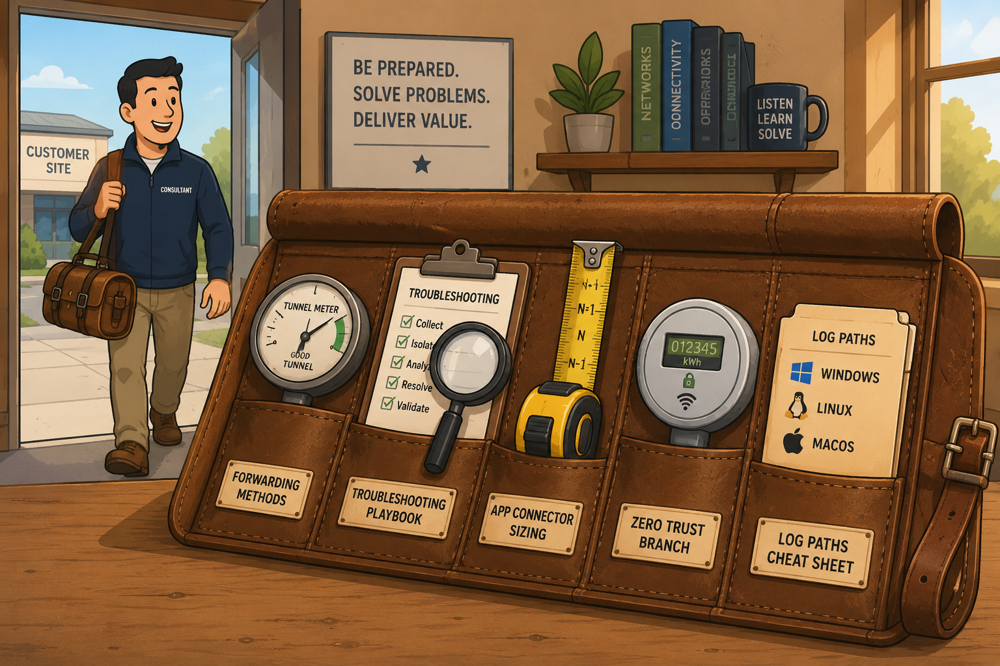
📷 A7.png — add this image to the folder
Flat minimalist cartoon illustration of a consultant's open field kit as an analogy for the connectivity services course takeaways. Wide composition. Foreground: a worn-leather rolled-out field kit on a workbench. Inside the kit, neatly arranged in pockets: a small tunnel-meter dial (forwarding methods), a magnifying glass with a clipboard (troubleshooting), a tape measure ruler with "N+1" markings (App Connector sizing), a small smart-meter icon (Zero Trust Branch), and a labelled folder with three OS icons (log paths). Background: a softly out-of-focus customer site visible through a doorway with a friendly consultant just stepping in carrying the kit, ready for the job. Warm afternoon light through a window, mood of practical preparedness. Clean geometric shapes, flat illustration style, bold outlines, simple cartoon characters, no text labels, no UI elements, educational infographic feel, modern tech-analogy aesthetic.